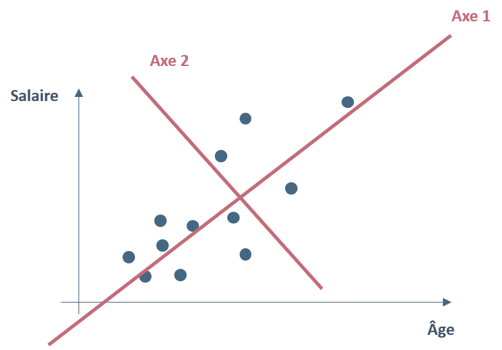
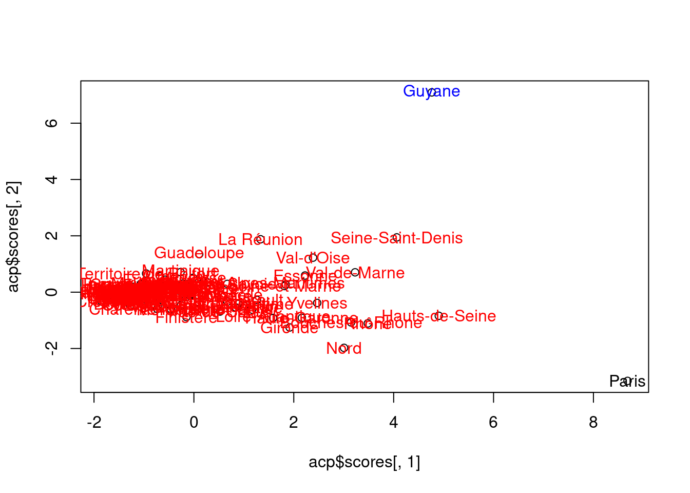
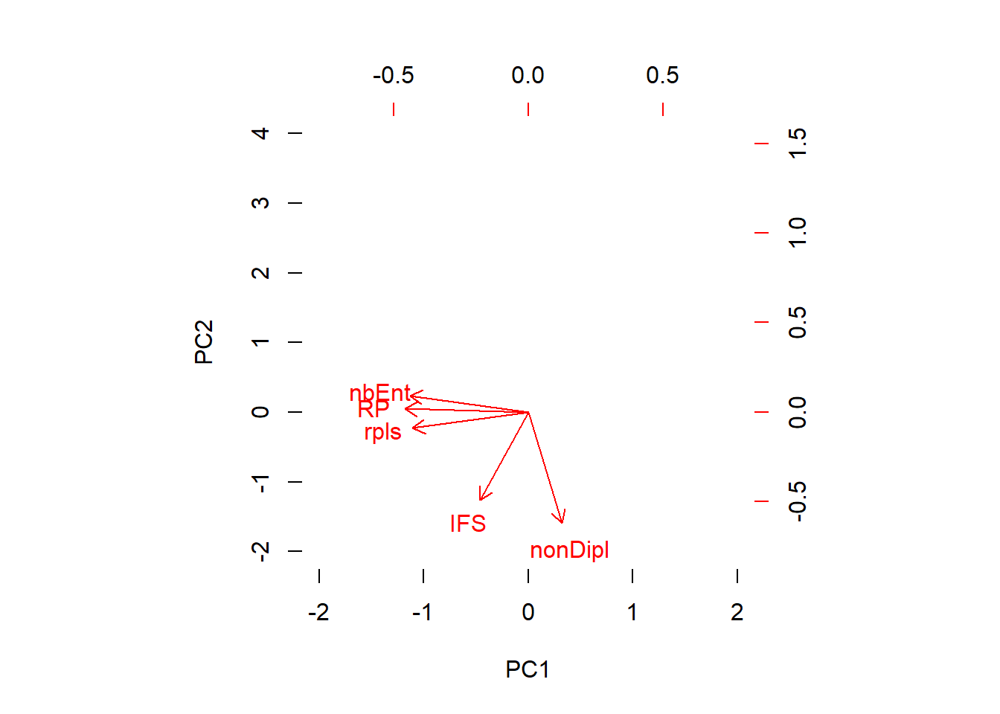
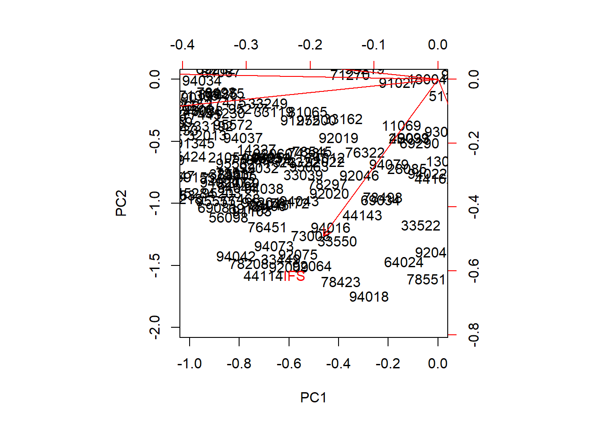
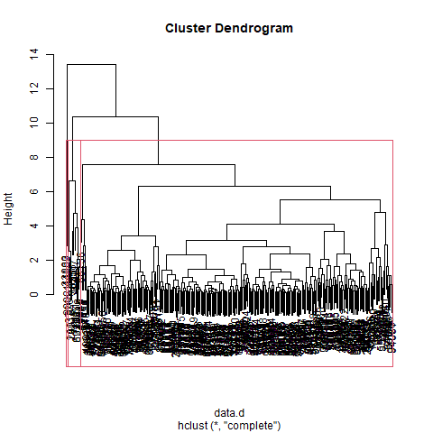
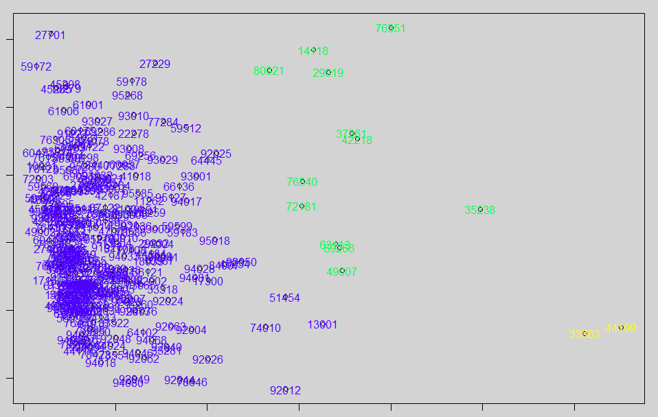

L’analyse factorielle et les classifications sont les deux grands types de méthodes descriptives en statistiques multivariées.
Les analyses factorielles résument l’information en colonnes. Les méthodes de classification s’attachent aux lignes.
La combinaison des deux permet un résumé complet.
On repart donc de la même donnée que pour l’analyse factorielle, les communes
rpls
nombre d’emplois locaux
diplôme
logement
Les axes factoriels rendent comptent le mieux possible de la dispersion du nuage de points.
Un facteur regroupe des informations communes à plusieurs variables.
Le premier axe prend en compte le maximum d’information.
Le deuxième prend en compte le maximum d’information à partir des résidus du premier.
Et ainsi de suite …
… d’où l’importance de l’informatique pour traiter du multicritère !

data_cr <- read.csv("data/base_cr", row.names = 1, fileEncoding = "UTF-8")
str(data_cr)## 'data.frame': 302 obs. of 5 variables:
## $ rpls : num -0.6072 -0.7098 1.0615 -0.2381 0.0205 ...
## $ nbEnt : num -0.6526 -0.6468 0.0739 0.103 0.3882 ...
## $ RP : num -0.6569 -0.5891 0.4832 0.0798 0.2921 ...
## $ nonDipl: num 1.803 1.20243 -0.06937 0.00129 0.16026 ...
## $ IFS : num -0.537 -0.537 -0.537 -0.537 0.978 ...acp <- prcomp(data_cr, scale = F)
acp$rotation## PC1 PC2 PC3 PC4 PC5
## rpls 0.5398933 0.11091801 0.1798550 0.7780208 -0.24196743
## nbEnt 0.5513202 -0.11609167 0.1842366 -0.5818114 -0.55688515
## RP 0.5742349 -0.02307407 0.1102068 -0.1743699 0.79194161
## nonDipl -0.1559523 0.77276678 0.6001166 -0.1336300 0.02266090
## IFS 0.2247097 0.61361145 -0.7492821 -0.0889790 -0.06037934La taille des axes illustre leur importance (voir commentaire graphique)
acp$sdev^2 / sum(acp$sdev^2)## [1] 0.583390201 0.213606069 0.159959453 0.035898565 0.00714571358 % de la variance pris en compte par le premier axe, etc…
Près des 3/4 de la variance dépend des 2 premiers axes.
Le premier axe résume la variation de la moitié des valeurs des 4 variables.
L’axe 3 a une haute valeur pour l’implantation des Maisons France Service.
Le nombre d’emploi et le diplôme sont liés et s’opposent au surlogement et aux taux de natalité.
biplot(acp, scale = 0)
# Pour voir les axes, on zoome et on met les individus en blancs.
biplot(acp, col = c("white", "red"), scale = 0, xlim = c(-2, 2), ylim = c(-2,4))
3 notions importantes :
Ici, toutes les variables semblent avoir la même importance
2 variables s’opposent, par exemple le nombre d’entreprises est presque en opposition avec le le nombre de non diplômés.
Les variables sont corrélées.
Ici, on observe que nombre d’entreprises, résidences principales et RPLS sont corrélées d’un côté et IFS et non diplômés de l’autre.
Les communes proches suivent le même modèle de données. Leur position dans le graphique montre leur rapport aux variables.
Dans le cas présent, il faudrait pouvoir examiner mieux les variables, on peut effectuer des zoomes.
biplot(acp, col = c("black", "red"), scale = 0, xlim = c(0, 3), ylim = c(0,3))
Par exemple, les communes autour de l’axe IFS se distinguent par rapport à cette variable.
Supprimer les valeurs posant problème et relancer les calculs. Essayer d’interpréter.
# Centrage et réduction : on repart du fichier
data_cr <- read.csv("data/base_cr", row.names = 1, fileEncoding = "UTF-8")
# matrice des distances entre les individus
data.d <- dist(data_cr)
# classification
cah <- hclust(data.d)
# dendogramme
png("img/dendo.png")
plot(cah)
# matérialisation des groupes
rect.hclust(cah, k = 3)
dev.off()
# découpage
groupes.cah <- cutree(cah, k = 3)
liste <- sort(groupes.cah)
table(liste)
tail(liste,28)
Il s’agit de représenter les groupes par des couleurs sur l’ACP précédente (dans le premier axe)
data_cr <- read.csv("data/base_cr", row.names = 1, fileEncoding = "UTF-8")
acp <- princomp(data_cr, cor = F, scores = T)
par(bg = "lightgrey", mar = c(1,1,1,1))
plot(acp$scores[,1],acp$scores[,2], type = "p")
text(acp$scores[,1],acp$scores[,2],col=c(topo.colors(3))[groupes.cah],cex
=1,labels=rownames(data))
Retirer les valeurs aberrantes, ici les groupes 2 et 3, jouer sur la taille des groupes et rejouer la classification, puis analyser.
L5GEABIM Analyses bivariées et multivariées